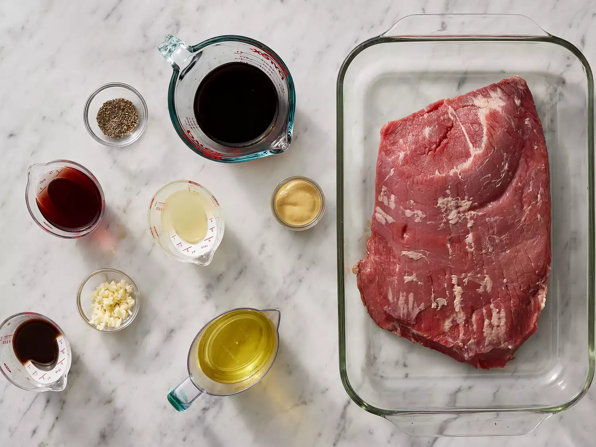
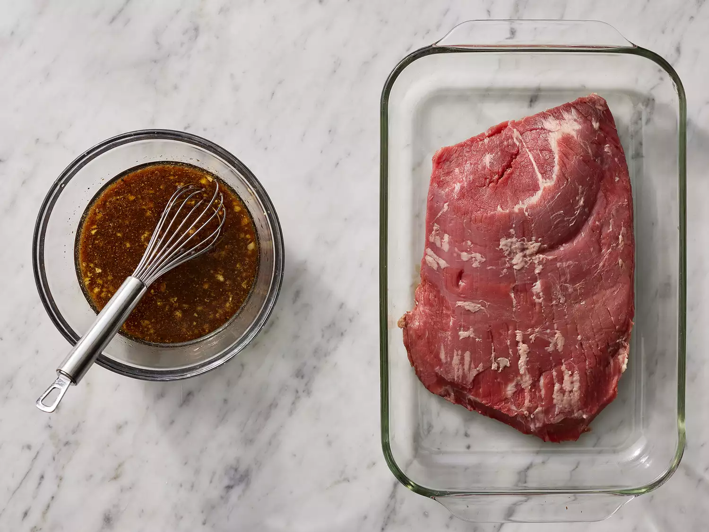
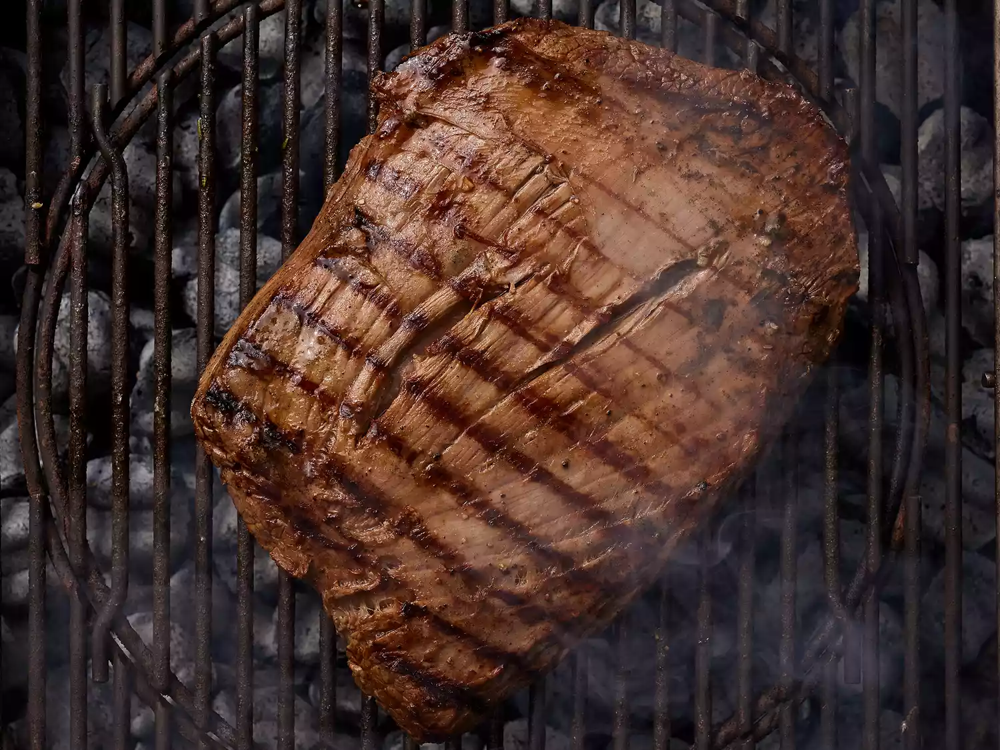

Marinated Flank Steak

Description
Flank steak is a lean cut of beef that comes from the cow's lower abdominal muscles. It's a relatively tough cut that's low in fat, which means a few things: Flank steak doesn't need to be trimmed, it's inexpensive compared to other cuts, and it benefits greatly from marination.
Home
Ingredients
Marinade:
- ½ cup vegetable oil
- ⅓ cup low-sodium soy saucel
- ¼ cup red wine vinegar
- 1 ½ tablespoons Worcestershire sauce
- 1 tablespoon Dijon mustard
- 2 cloves garlic, minced
- ½ teaspoon ground black pepper
Steak:
- 1 (1 1/2-pound) flank steak
Steps:
- Gather all ingredients.

- Whisk together oil, soy sauce, vinegar, lemon juice, Worcestershire sauce, Dijon mustard, garlic, and pepper for marinade until thoroughly combined. Place steak in a 9x13-inch glass baking dish.

- Pour marinade over flank steak in the baking dish; turn several times to coat thoroughly with marinade. Cover, and refrigerate for 2 to 6 hours, or up to 12 hours if you have time.

- When ready to cook, preheat an outdoor grill for medium-high heat and lightly oil the grate.
- Remove steak from the marinade and shake off excess. Discard the remaining marinade.
- Cook steak on the preheated grill for about 5 minutes per side, or to desired doneness.

- Remove from the grill and let rest for 5 minutes before slicing and serving.
- Serve hot and enjoy!